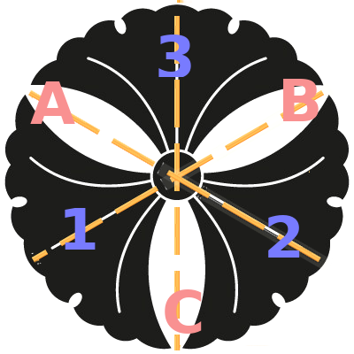

These groups are probably the most famous examples of groups, but we are covering them lastly. Some of the texts covering group theory tend to start the idea of groups by introducing the shapes and the set of all of their symmetrical transformations. We’ve followed another path, but anyway, these groups are in fact one of the important applications and examples of group theory, therefor, they must be covered at some point. They are also one of those groups that we are going to get back at them many times.
To start, let’s take a look at the following shape. It is called Snoldelev Interlaced Horns, a symbol that was found on a rune-stone named Snoldelev Stone found in Denmark, believed to be created back at the 9th century, at the age of Vikings.
Now let’s talk about this beautiful sign’s symmetries. What do we mean by symmetries? Let’s have a definition of symmetry here. Symmetry is a transformation that under which the shape remains unchanged. These transformations can be any functions like displacement, rotations, mirroring, etc. Now, let’s take a look at Snoldelev interlaced horns, and try to find these transformations.
Well, we can rotate it by 120 from its’ middlepoint and we will get the same shape. Also it is possible to rotate it 240, and we’ll still get the same shape. What about 360? Well yes, and this transformation is the same as doing nothing or rotating by 0. This is in fact our identity member. We can go on and add more 120s to get like 480, but we know that a rotation by 480(or any others similarly), is the same as a rotation by 120.
So here are 3 symmetrical transformations, are there any else? The answer is no. At first you might think that mirroring is also possible, but if you pay a closer attention, you’ll see that by mirroring, you will change the orientations of the horns. The horns are now facing clockwise, but upon mirroring, they’ll become counter-clockwise, therefor they are not symmetric operation for this shape. As an opposite example, take a look the following one:
This symbol of 3-leaves is a common Japanese emblem called Mitsu Ichō that it is believed that the Tokugawa clan used to bear in the 17th century. You can see that for this symbol, other than rotations by 0,120,240, you have mirroring by the lines such as the orange line shown in Figure [mitsuicho].
So for our Snoldelev interlaced horns, if we note rotations from the middlepoint by 0as \(e\), by 120as \(v\), and 240as \(w\), The set of all of the symmetric transformations in the 2D plane of the shape are:
\[G_1 = \{ e, v, w \}\]
If we add composition of functions as our operation (just as before), the (\(G_1\),composition) is the Symmetry Group of our Snoldelev interlaced horns.
You can see that the inverse of \(v\) is \(w\), and inverse of \(w\) is \(v\), since \(vw\) (their multiplication) means a rotation by 240followed by another rotation of 120, which sums up to a rotation by 360= 0which is our identity member e. It is obviously closed, and since we are dealing with function compositions, our operation is associative. The following is the multiplication table of our Snoldelev interlaced horns:

You can see that this group is Abelian. And also compare this table to Table [table3] of our permutation group, and see how similar they look. This similarity is a very important phenomena in group theory that we are going to come back in the future to talk about it.
Now let’s check out the symmetries of our Mitsu Ichō. We’ve noticed that other that \(e, v, w,\) this shape has 3 other mirroring transformations too. The orange line in [mitsuicho] is showing one of these mirroring symmetric lines, and the other two can be spotted easily. We call these three mirroring or reflection transformations A, B, and C. So the set of all the symmetry transformations of Mitsu Ichō sign is:
\[G_2 = \{ e, v, w, A, B, C \}\]
Now we should make a multiplication table for the symmetry group of Mitsu Ichō label. But before that, let’s number each leaf of Mitsu Ichō so we can visualize each transformation a little better (we’ve actually numbered the area between the leaves, but we are going to call them leaves anyway). Notice that we have 3 leaves, each numbered in a specific way, and each of the members of \(G_2\) changes the order of our numberings in a different way. Look at the figure below:

For example, reflection through \(A\) exchanges the places of 1 and 3, but 2 will stay unchanged. Or with transformation \(v\), 2 goes to 3, 3 goes to 1 and 1 goes to 2. Remember that both \(v\) and \(w\) are chosen to be counter-clockwise. Now based on this figure, try to check the following multiplication table for our Mitsu Ichō label’s symmetry group.

You have probably noticed that this group looks pretty much like \(S_3\). You can compare their multiplication tables and see that they actually act like each other. You can actually do a little trick and rearrange the leaves’ numbers in a row, and then see that this set of symmetric transformations are nothing but our old permutations of our leaves’ numbers (you can go now and check which permutation is associated with each Mitsu Ichō’s symmetry group’s members). By this analogy, it is now obvious why their multiplication tables looks so much like each other, and you can now see why we’ve called \(S_n\), the Symmetry Groups.
These two examples are not the only pairs of groups that look like each other. We will talk about these groups that look like each others in details in the future.
Any geometric shape in the world has a symmetry group associated with them. Even the most asymmetric shapes has the trivial group of \((\{ e \} , composition)\) as their symmetric group. The order of the symmetry group for many shapes can exceed much more than what we’ve covered. For example, a simple cube has 24 members in its’ symmetry group, or some other highly symmetrical shapes in different dimensions contain even more members. And their transformations can be either transformations, reflections from a point or a line, rotations, and many other things.
I believe these example are quite enough at the start of the study of group theory. I hope these examples have created an idea about groups and what they are all about. You might have noticed that group theory is actually introducing another level of abstraction, because we are dealing with operations and transformations themselves inside our algebraic system. We are talking about the relations and algebra between the rotations and reflections themselves, and we do not talk about the points of any specific shape that undergoes these functions. Now this abstraction created by the groups can helps us in many ways, and it is one of the biggest powers that groups can offer.
There are many other examples of groups, like the Rubic cube group (which has more or less became the symbol of group theory), many puzzle games’ groups, Knot theory in in topology, many groups defined in physics such as gauge group, and many more, but I believe these examples here are enough. Try to remember General linear matrices and Table [table1], Permutation groups, and \(S_n\). We are going to get back to them many times, so try to memorize their notation before continuing.
Before ending this chapter, let us go through another last concept called Cyclic Groups, and then move on from the basics and start to learn some important relations between groups and some famous theorems in group theory.